ベトナムの旅は
ニャチャンから始まる。
ニャチャンは海沿いの街で、メインストリートには海鮮料理屋が軒を並べ、外国人（主にロシア人）向けの土産屋、クラブなどが数多くひしめくリゾー地だ。
しかし、同じビーチリゾート地のダナンが高級リゾート地なのに対してこちらはどちらかというと庶民的なビーチなのだ。
ま、どっちも海水の透明度とかはそんなにキレイじゃないですけどね。
そんなニャチャンの町外れにある隆山寺にウオーミングアップがてら参拝しに行くことにした。
この寺には街を見下ろす大仏さんがおわすのだ。
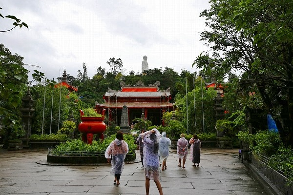
のっけから雨模様。
結局この旅では曇天に見舞われっぱなしであった。
土砂降りのスコールが一日に何度も訪れる。
その度にカフェで一休みしながら雨の上がるのを待つのだ。
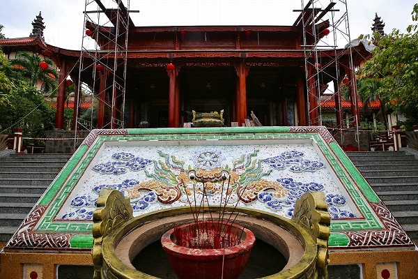
大雄本殿は修復工事中だったので、そそくさと参拝して大雄本殿右手にある階段を上っていく。
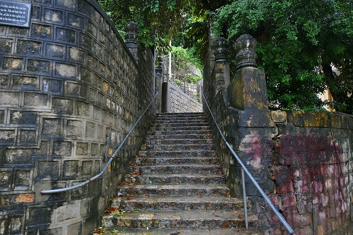
湿気が多いベトナムでは建物の壁や擁壁はすぐ黒ずんでしまう。
ある意味ベトナムらしい風景だ。
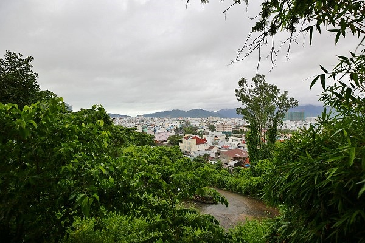
滑らないよう足元を凝視しつつ階段を上っていく。
ふと視線をあげるとニャチャンの街が見える。
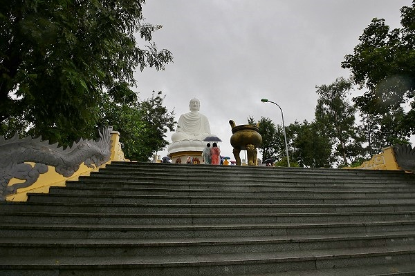
そして現れる大仏さん。
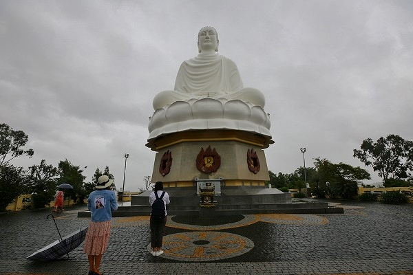
ベトナムの大仏によくみられるスマートで端正な顔立ちだ。
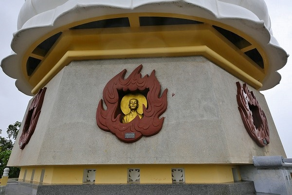
台座には僧侶のレリーフが。
この方たち皆
ベトナム戦争の時に焼身自殺されたお坊さんですな…。
焼身自殺した僧侶といえばティック・クアン・ドック師が有名だ。
その焼身の姿を映した写真は後にピューリッツア賞を受賞することになるので皆さんもその痛ましい姿を見たことがあるかもしれない。
しかしその彼の後を追うように仏教を弾圧する政策に抗議して多くの僧侶が焼身自殺をしたことはあまり話題に上らない。
そんなベトナムのかくれた歴史を物語る大仏なのである。
あ、だから火のフレームなのかぁ。合掌。
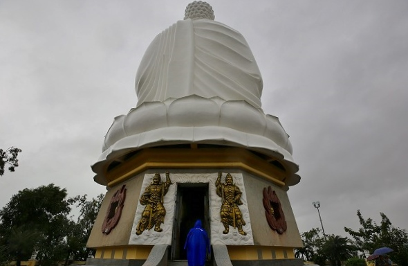
背後から中に入ることが出来る。
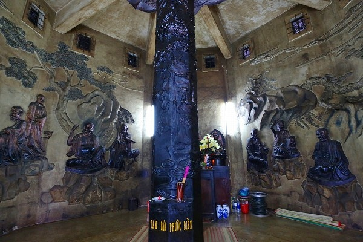
台座の内部は僧のレリーフが。
数は数えなかったが十八羅漢だろうな。
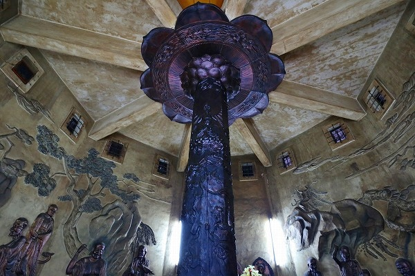
真ん中に心柱が建っている。
この心柱はこのまま大仏さんの内部まで到達して大仏自身の心柱になっているのだろうか。
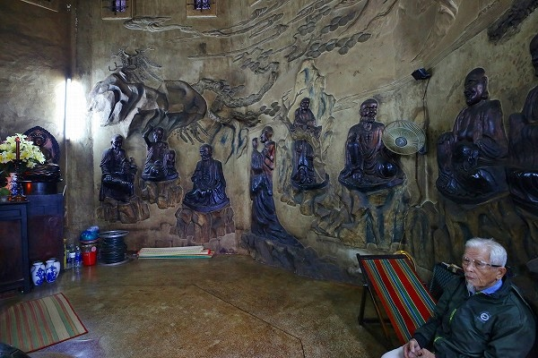
ベトナムの仏教は今でこそ隆盛を極めているように見えるが、その陰には数々の僧侶が様々な闘争をしてきた事を忘れてはなるまい。
軽い肩慣らしのつもりだったが、お天気同様どんよりとしたスタートになっちゃったよ。
次へGO！